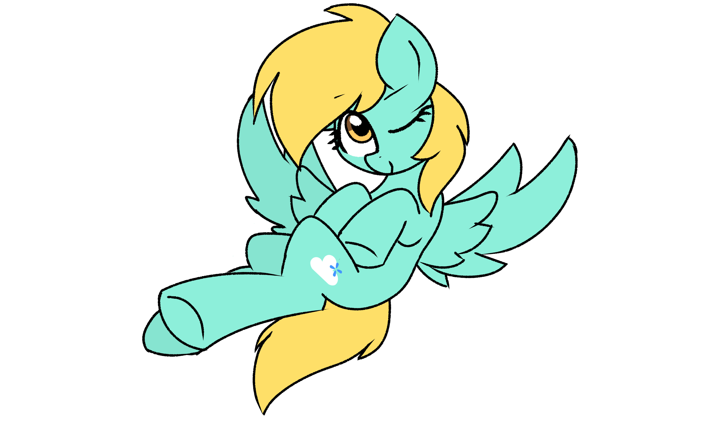
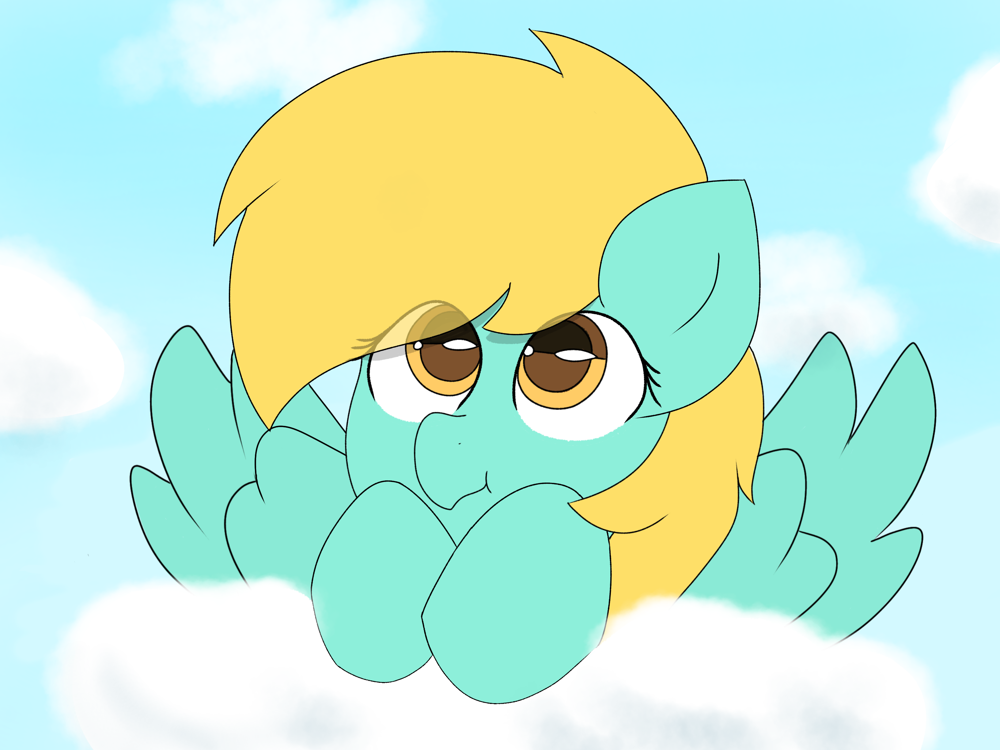
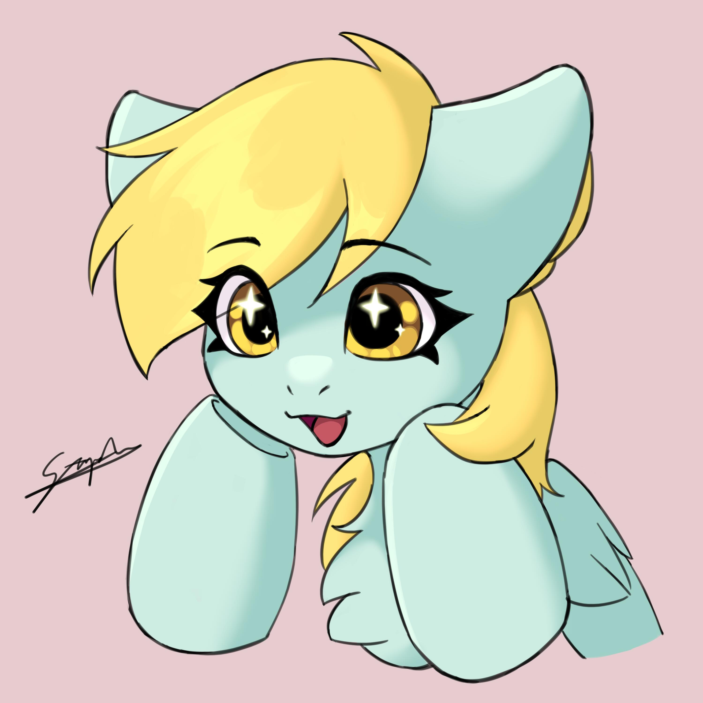
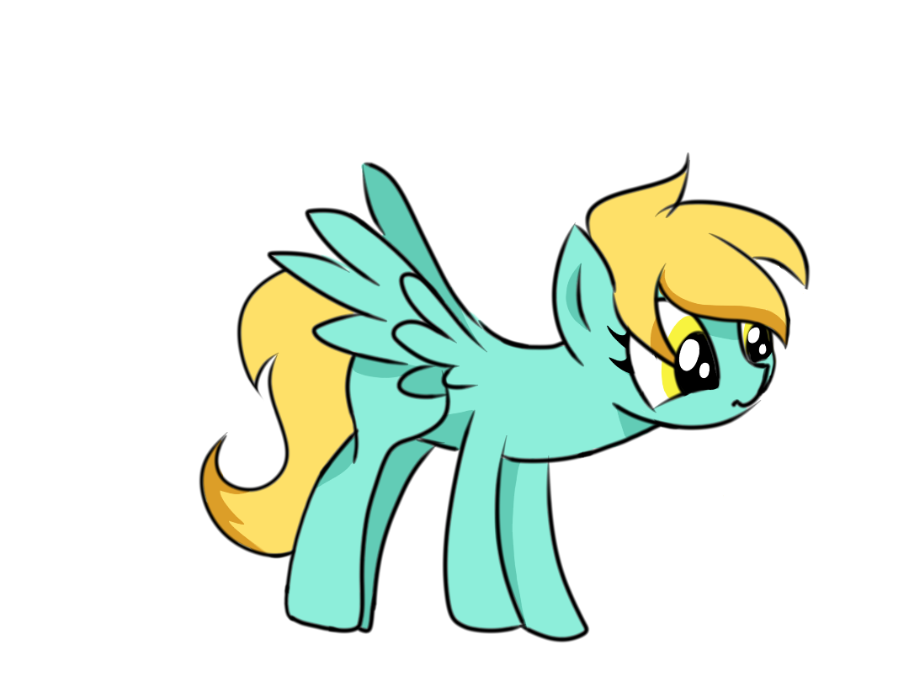
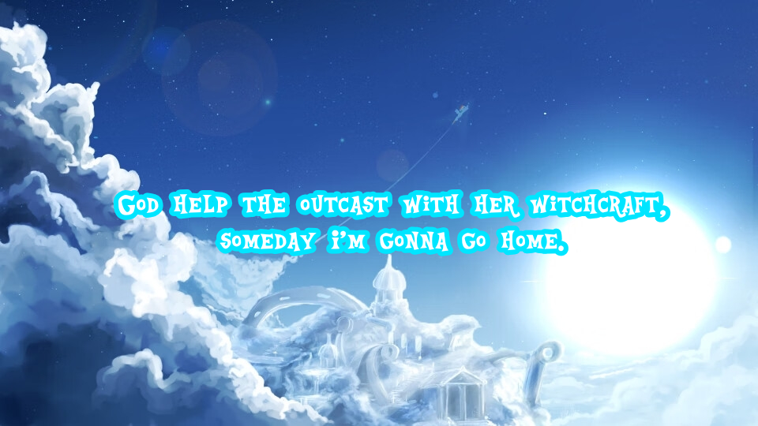

带着天琴心弦去旅行
喜欢带着布偶到处走走、拍拍照片。每一段旅途都能留下新的故事。
 Skyblue 一匹小马的主页
Skyblue 一匹小马的主页
HELLO FROM CLOUDSDALE · 欢迎来到我的小天地
Skyblue Mornbreeze
住在人类世界的蓝色小天马。
喜欢小马、喜欢朋友，也喜欢把天马行空的想法一点点做出来。

☁ CLOUDSDALE BORN 一匹正在探索世界的小马 ✦
ABOUT ME / 关于我
我的全名是 Skyblue Mornbreeze，也可以叫我天蓝。自设出生在云中城，现在生活在上海，一边学习和科研，一边做一个快乐的 Brony。
在不同的地方，也许你会听到朋友叫我 Skyblue 或小蓝。名字不一样，都是同一匹喜欢认识新朋友的小马。
THINGS I LOVE / 喜欢的事

喜欢带着布偶到处走走、拍拍照片。每一段旅途都能留下新的故事。

还在学习，但总想把脑海中的小马世界画出来、写出来、唱出来。

希望有一天，能做出像 Sweetiebot 一样厉害的机器小马。
FOLLOW THE TRAIL / 继续探索
地图、作品、画廊和朋友们，都在这些小小的入口后面。随便逛逛吧！
MY LITTLE PLAYLIST / 听点音乐
五首我喜欢的小马音乐。选择一首后，在 Bandcamp 官方播放器里按下播放键。
NOW SELECTED
Neighsayer
点击加载才会连接 Bandcamp。歌曲由音乐人或发行方提供，本站不托管音频；播放受其平台规则与浏览器设置影响。
